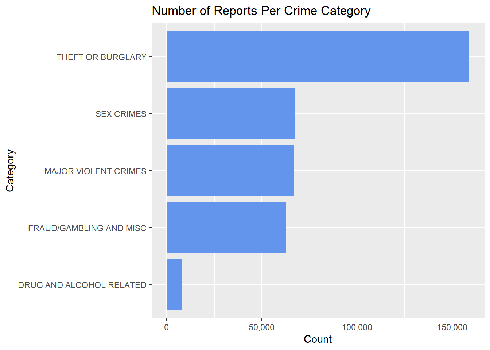
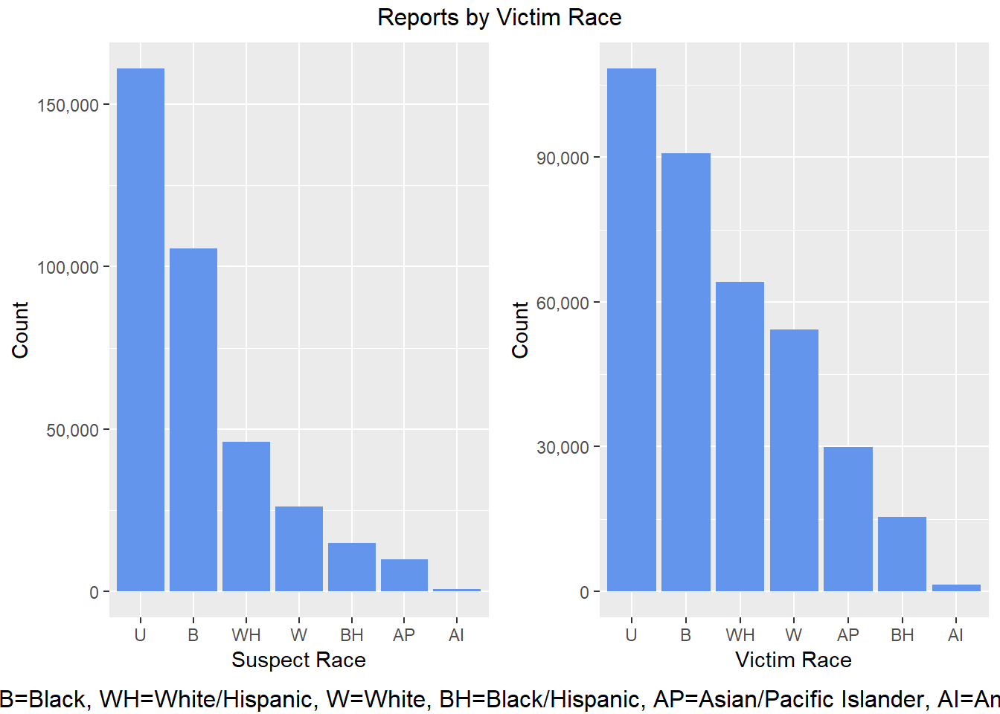
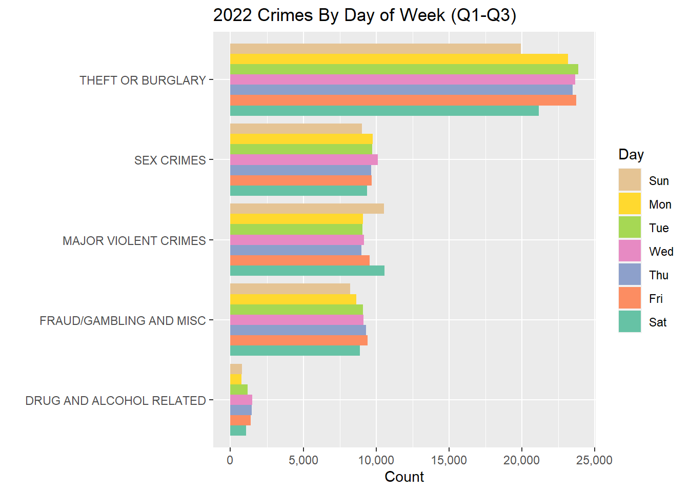

Chapter 7 Results
library(scales)
#library(vcdExtra)
library(ggplot2)
library(forcats)
library(dplyr)
library(Lock5withR)
library(tidyr)7.1 Planning Notes
–To delete
#What Graphs Do We Want?
#Data Prep Graphs
#1) Missing data patterns by row (using redav library or mi library) --heatmap
#Demographic Related Chart
#1) Bar Chart - CRIME_CAT by VIC Gender and/or SUSPECT Gender
#2) Mosaic Plot - TBD (CRIME CAT, VIC Gender, and Premise, +)
#3) Count by Premise (or use as a cut)
#--see ideas below
#Time Series Charts
#1) Line Chart - Overall 2022 Trend by Count
#2) Bar Chart - CRIME CAT by Day of Week
#3) Density Plot - Count by Time of Day (maybe with facets)
#4) (TBD more CRIME CAT by Time or Premise by Time of Day/Park)
#5) Look at box plot by time of day?
#Maps & Distance Info
#1) Counts By Borough (bar chart) (consider faceting by another dimension that looks good)
#2) Map of count in Columbia Area
#3) Line Graph of Density At Diff Points (x is distance from CU and y is total counts)
#4) Heat Map/Choropleth - Count by Precinct Code (may require addl data? --look into if feasible)
#Other Potential
#x) Parallel Coordinates Plot - not enough continuous vars
#x) Stacked Bar Chart?
#x) Scatter Plot (of Distance from CU vs Time of Day?)
#x) Cleveland Dot Plot - TBD7.2 Crime category and Demographic analysis
agg_tbl <- df_key_fields%>% group_by(CRIME_CAT) %>%
summarise(total_count=n(),
.groups = 'drop')
df_counts <- agg_tbl %>% as.data.frame()
ggplot(df_counts) + geom_bar(aes(y=CRIME_CAT, x=total_count), stat="identity",fill = "cornflowerblue")+
ggtitle("Number of crimes per category ") +
xlab("Count") +
ylab("Category")
We start our analysis of crime types by observing that theft or burglary related crimes are the most common by far (more than 2x the next highest category). This category is followed by sex crimes, violent crimes, and fraud/gambling related crimes all of which are relatively close in number. The lowest crime category by far is drug and alcohol related crimes.
We can investigate the data to see the top 10 kinds of crimes before we bucket them into categories.
df_key_fields %>%
group_by(OFNS_DESC) %>%
summarise(freq = n()) %>%
arrange(desc(freq)) %>%
slice(1:10) %>%
ggplot(aes(y=fct_reorder(OFNS_DESC,freq,.desc = FALSE),x=freq)) +
geom_bar(stat = "identity",fill = "cornflowerblue") +
ggtitle("Top 10 Most Common Types of Crime") +
xlab("Counts") +
ylab("Type of Crime") —Maybe we make this chart a clevland dot plot with all original crimes categories and colored by crime_cat? Maybe facet, idk.
—Maybe we make this chart a clevland dot plot with all original crimes categories and colored by crime_cat? Maybe facet, idk.
–COLOR NOT WORKING
df_key_fields$FCT_CRIME_CAT <- as.factor(df_key_fields$CRIME_CAT)
df_key_fields %>%
group_by(OFNS_DESC) %>%
summarise(freq = n()) %>%
arrange(desc(freq)) %>%
slice(1:10) %>%
ggplot(aes(x = freq, y = fct_reorder(OFNS_DESC, freq))) +
geom_segment(aes(yend = OFNS_DESC), xend = 0, colour = "grey50") +
geom_point(color = "blue", size = 3, aes(colour = FCT_CRIME_CAT)) +
ggtitle("Top 10 Most Common Types of Crime") +
xlab("Counts") +
ylab("Type of Crime")
Here, we can see the crime incident that has happened the most frequently is “Petit Larceny”, a form of larceny in which the value of the property taken is generally less than $50. Further, five of the top 10 crimes are theft or burglary related, which explains why the most common crime category reported is theft.
We can start our demographic analysis by digging further into the race, age, and gender of both suspects and victims.
df_key_fields %>%
group_by(SUSP_RACE) %>%
summarise(freq = n()) %>%
arrange(desc(freq)) %>%
slice(1:7) %>%
ggplot(aes(x=fct_reorder(SUSP_RACE,freq,.desc = TRUE),y=freq)) +
geom_bar(stat = "identity",fill = "cornflowerblue") +
scale_x_discrete(guide = guide_axis(n.dodge=3))+
ggtitle("Suspect Race vs Total Count") +
xlab("Race") +
ylab("Count")
df_key_fields %>%
group_by(VIC_RACE) %>%
summarise(freq = n()) %>%
arrange(desc(freq)) %>%
slice(1:6) %>%
ggplot(aes(x=fct_reorder(VIC_RACE,freq,.desc = TRUE),y=freq)) +
geom_bar(stat = "identity",fill = "cornflowerblue") +
scale_x_discrete(guide = guide_axis(n.dodge=3))+
ggtitle("Victim Race vs Total Count") +
xlab("Race") +
ylab("Count") While there is a lot of null and unknown data, presumably for the sake of anonymity, we notice that there are trends between the race of the suspect and victim. Lets see if we observe something similar for the sex of a victim and suspect
While there is a lot of null and unknown data, presumably for the sake of anonymity, we notice that there are trends between the race of the suspect and victim. Lets see if we observe something similar for the sex of a victim and suspect
df_key_fields %>%
group_by(SUSP_SEX) %>%
summarise(freq = n()) %>%
arrange(desc(freq)) %>%
#slice(1:6) %>%
ggplot(aes(x=fct_reorder(SUSP_SEX,freq,.desc = TRUE),y=freq)) +
geom_bar(stat = "identity",fill = "cornflowerblue") +
#scale_x_discrete(guide = guide_axis(n.dodge=3))+
ggtitle("Suspect Sex vs Total Count") +
xlab("Sex") +
ylab("Count")
df_key_fields %>%
group_by(VIC_SEX) %>%
summarise(freq = n()) %>%
arrange(desc(freq)) %>%
#slice(1:6) %>%
ggplot(aes(x=fct_reorder(VIC_SEX,freq,.desc = TRUE),y=freq)) +
geom_bar(stat = "identity",fill = "cornflowerblue") +
#scale_x_discrete(guide = guide_axis(n.dodge=3))+
ggtitle("Victim Sex vs Total Count") +
xlab("Sex") +
ylab("Count")Clearly most of the crimes committed are by men, and most of the victims are female.
–ATTEMPT AT MOSAIC PLOT
counts2 <- df_key_fields %>%
group_by(VIC_RACE, SUSP_RACE) %>%
summarize(Freq = n())
vcd::mosaic(VIC_RACE ~ SUSP_RACE, counts2, direction = c("v", "h"),)
7.3 Time Series
To begin the analysis on time, first we would like to justify why we filtered the data for only crimes that took place in 2022.
ts_year_all <- df %>%
#filter(year(Incident_Date) >= 2022) %>%
group_by(year(Incident_Date)) %>%
summarize(Complaint_Count = n() ) %>% rename( Incident_Year = `year(Incident_Date)`)
ggplot(ts_year_all, aes(x=Incident_Year, y=Complaint_Count )) + geom_line() +
scale_y_continuous(label=comma) +
scale_x_continuous(limits= c(2000,2023) ) +
labs(
title = "Date of Incident (Reported in 2022)",
x = "Incident Year (raw data)",
y = "Number of Reports",
) From this we see that there is a large drop off in historic reports. This make sense as it is more likely that someone would report a crime in the same year that it occurs. Although NYPD allows people to report crimes that occurred in 2020, there will be much fewer of them reported in 2022. If we wanted to use data prior to 2022 we should include the old crime reports for prior years. Also there are some quality issues with historic data as we see very old crimes (year 1500) which indicate some human error or a record-keeping issue.
From this we see that there is a large drop off in historic reports. This make sense as it is more likely that someone would report a crime in the same year that it occurs. Although NYPD allows people to report crimes that occurred in 2020, there will be much fewer of them reported in 2022. If we wanted to use data prior to 2022 we should include the old crime reports for prior years. Also there are some quality issues with historic data as we see very old crimes (year 1500) which indicate some human error or a record-keeping issue.
So focusing on incidents in 2022, we can look at the overall trend during the year.
ggplot(df_filter, aes(x=Incident_Month)) +
geom_line(aes(fill=..count..),stat="bin",binwidth=1) +
scale_x_continuous(limits = c(1,9), n.breaks=12) +
scale_y_continuous(limits = c(0,50000), label=comma) +
labs(
title = "2022 Crimes Per Month (Q1-Q3)",
x = "Month (as a number)",
y = "Total Reports",
)
#TODO make graph prettierWe can see there are more crimes reported in the summer months, presumably it is warmer. Let’s facet this:
ggplot(df_filter, aes(x=Incident_Month, color=
fct_infreq(CRIME_CAT)
)) +
geom_line(aes(fill=..count..),stat="bin",binwidth=1) +
scale_x_continuous(limits = c(1,9), n.breaks=12) +
scale_y_continuous(limits = c(0,20000), label=comma) +
#facet_grid((CRIME_CAT) ~ .) +
labs(
title = "2022 Crimes Per Month (Q1-Q3)",
x = "Month (as a number)",
y = "Total Reports",
color = "Crime Category"
)  Maybe, the trend is dominated by theft crimes but it does seem like there is a hump over summer. Uniquely there is a dip for drug crimes.
Let’s now look at some other time related charts
#ggplot(df_filter, aes(x = Incident_DayOfWeek, fill=fct_infreq(CRIME_CAT))) +
# geom_bar(stat='count', position='dodge')
ggplot(df_filter, aes(y=CRIME_CAT , fill=fct_rev(Incident_DayOfWeek)) ) +
geom_bar(stat='count', position='dodge') +
scale_x_continuous(label=comma) +
scale_fill_discrete(breaks=c('Sun','Mon','Tue','Wed','Thu','Fri','Sat')) +
labs(
title = "2022 Crimes By Day of Week (Q1-Q3)",
x = "Total Reports",
y = "",
fill = "Day"
)  We see some interesting trends here - Theft is lower on weekends, gambling up on weekends, sex crimes high on Wednesdays surprisingly.
We see some interesting trends here - Theft is lower on weekends, gambling up on weekends, sex crimes high on Wednesdays surprisingly.
Let’s also look at the time of the day:
ggplot(df_filter, aes(x = Incident_HourTime, y=fct_rev(Incident_DayOfWeek) )) +
geom_density_ridges() +
scale_x_continuous(limits = c(0,24), breaks = seq(0, 24, by = 1)) +
labs(
title = "Hourly Breakdown (Total Q1-Q3 2022)",
x = "Time of Day (24 Clock)",
y = "Day of Week"
) #+ theme_classic(18)
#TODO change theme to look better?
#not quite sure why hour 24 does not equal hour 0...The raw data is rounded to the nearest minute but there is likely binning happening with time reported on the nearest hour. There also appears to be a peak at 12:00 which is likely a data quality issue in that reports may default to that time when not specified exactly. Otherwise this graph shows that crimes seems to peak at night around 6pm. But is this related to individual crimes and in/around parks?
ggplot(df_filter, aes(x = Incident_HourTime, y=Premise_Derived )) +
geom_density_ridges() +
scale_x_continuous(limits = c(0,24), breaks = seq(0, 24, by = 1)) +
facet_grid((VIC_Individual_Flag) ~ .) +
labs(
title = "Crimes by Premise and Time",
subtitle = "Y = Indivuals, N = Entities/Businesses/NY State",
x = "Time of Day (24 Clock)",
y = "Premise Category"
)
#TODO Show counts for each of these groups since not representative (ex what is a crime against and entity in a park)? Refer back to moaisic plotFrom prior charts, we know that the number of crimes is skewed toward those occurring in “Inside”. This does not represent the magnitude but we can see that for individuals, parks are more ‘dangerous’ at night - more so than other locations. However, it is somewhat comforting to know that this starts to drop off quickly after about 7-8pm.
#--Let's specifically look at crime around Columbia for Individuals
#ts_filter <- df_filter %>% filter(VIC_Individual_Flag == 'Y') %>%
# filter(dist_to_CU <= 2000) %>% #only 10k rows
# filter(Premise_Derived == "PARK") #only 73 rows, not helpful
#--Box plot by time of day? TBD